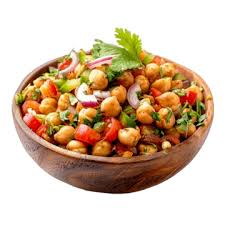

Home
Chana Chaat (Chichpea Salad)

Description
Chana Chaat is a quite delicious and easy to make dish. Boiling some chickpeas and adding some raw vegetables and spices to it pretty much does the thing.
Ingredients
-
Chickpeas
-
Onions
-
tomatoes
-
chilli or chilli powder
-
salt
-
lemons
Steps
-
Soak the chickpeas for 7-8 hours in clean water after washing them thoroughly
-
After 7-8 hours Rinse them with clean water
-
Boil them in the pressure cooker by adding water and salt to them
-
when they are properly cooked and boiled, Take them out in a large bowl
-
Cut a few onions and tomatoes in small pieces and add them to the bowl of chickpeas
-
add some finely chopped chilli or chilli powder to the bowl containing other items
-
now extract some lemon juice and it in it
-
some more salt can be added according to taste
-
stir it and mix it thoroughly and it is ready to serve.